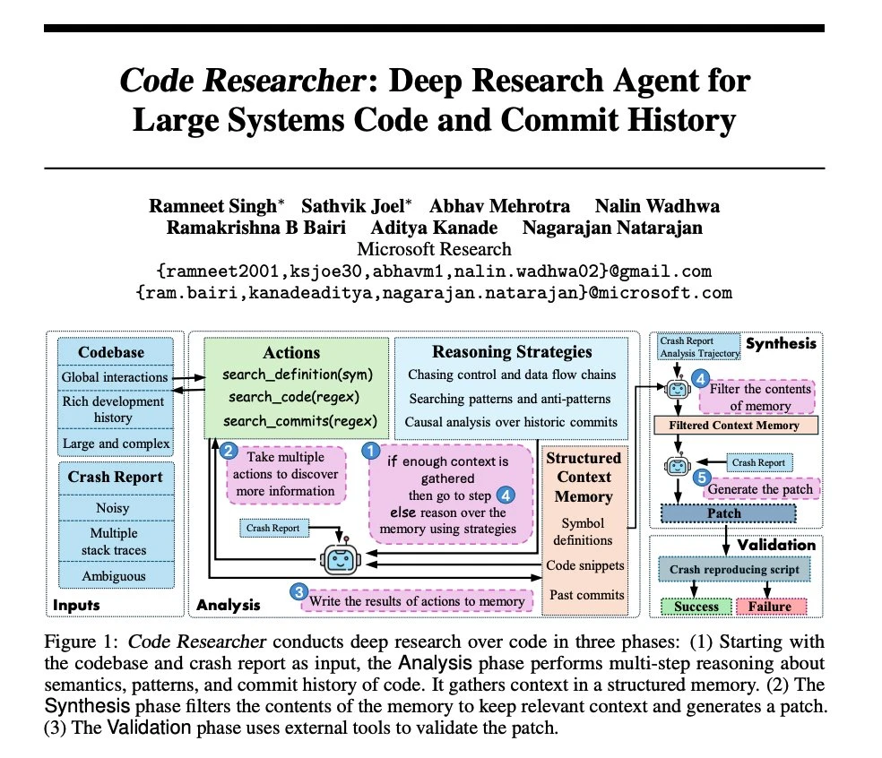

weekly AI awards üèÜ
@OpenAI reduces reasoning prices
@MistralAI launches reasoning model and infrastructure
and more...
Use
◀
and
▶
keys to navigate through slides.
Click on any link/image to access the source.
Check the
archive of weekly awards
.
o3 at the same price as GPT-4.1

üìö
view all previous issues
✨ see you next week!